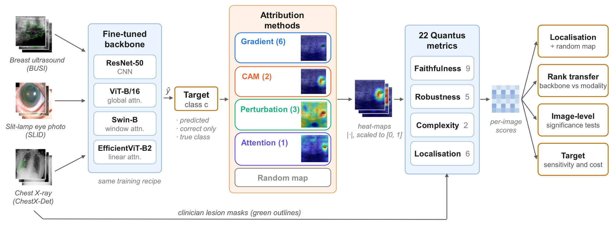
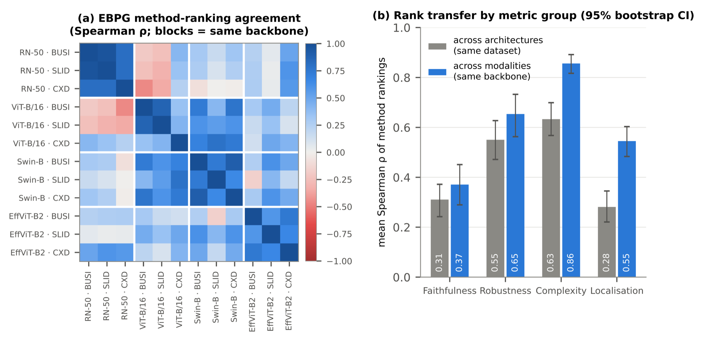
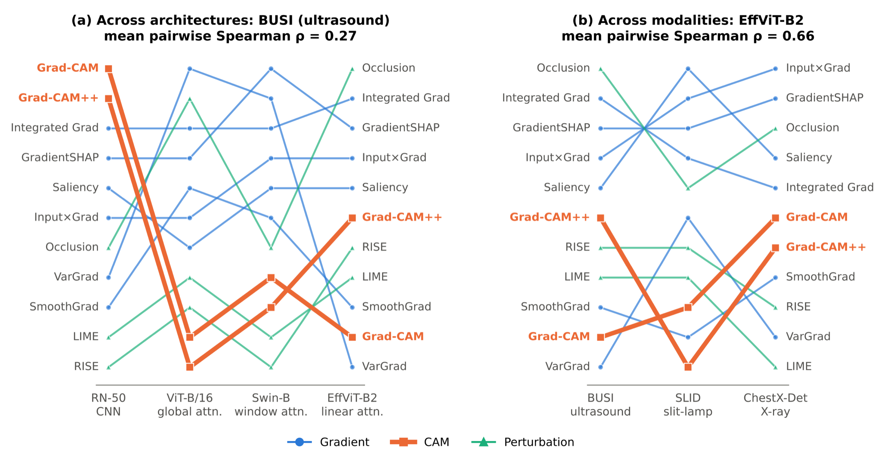
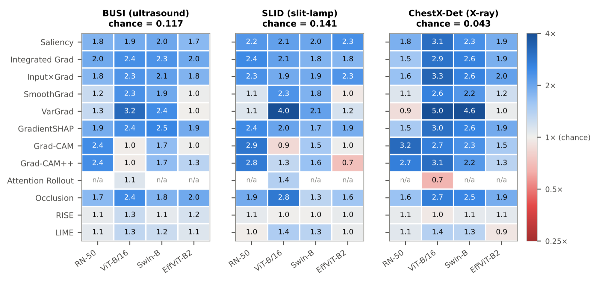
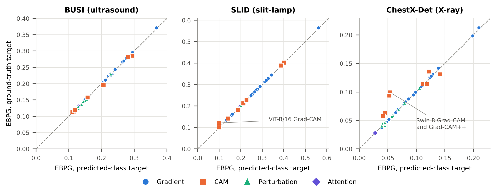
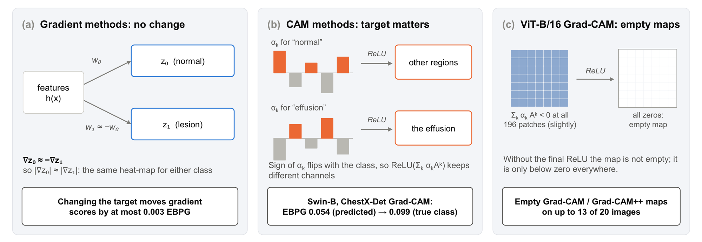
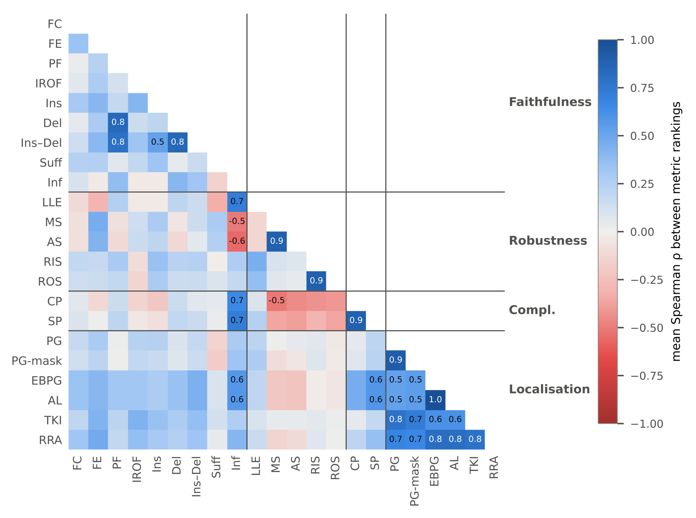
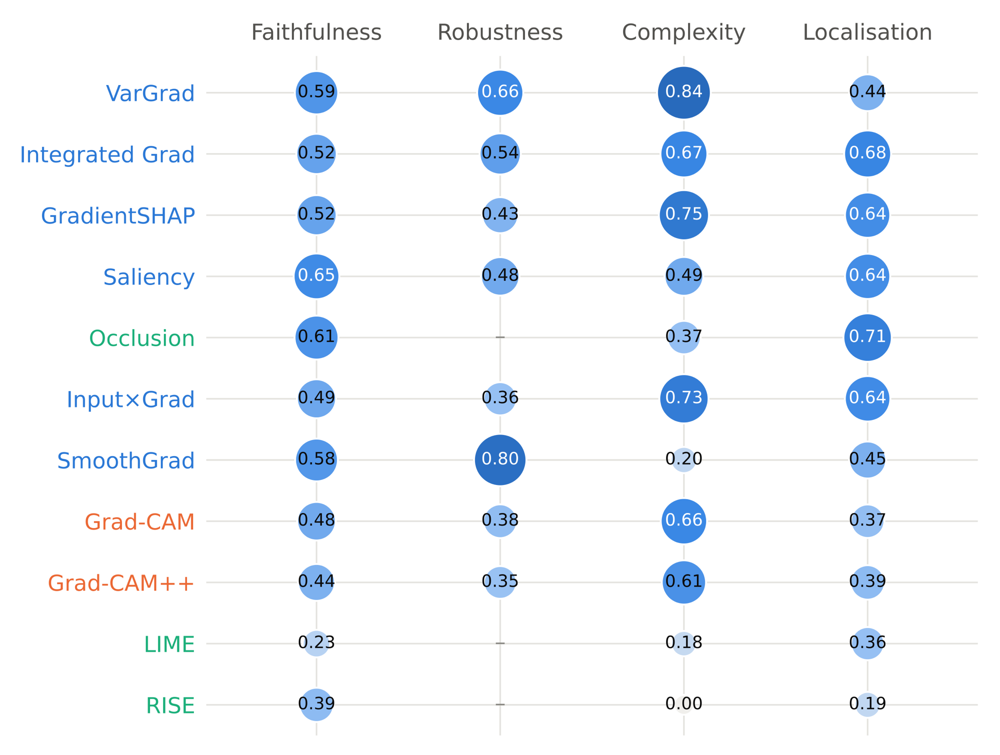
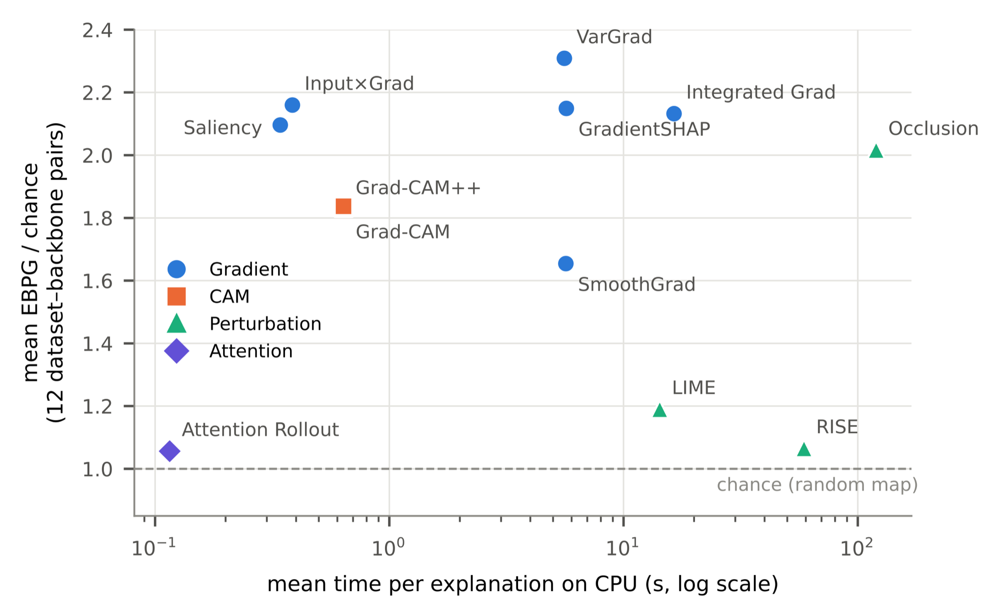
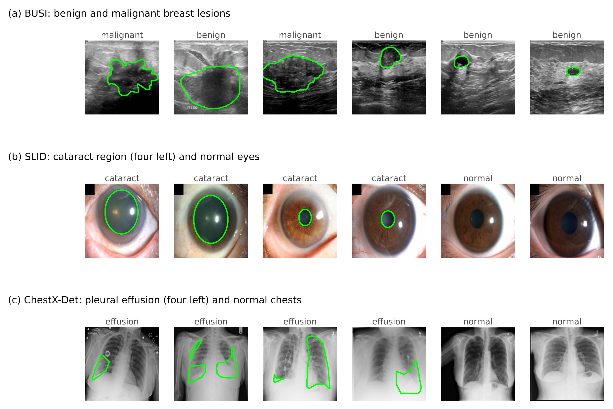

Benchmark overview

Benchmark pipeline. Images from three datasets are classified by four fine-tuned backbones. Each prediction is explained for a chosen target class with 12 attribution methods from four families and a random map. Every heat-map is scored with 22 Quantus metrics, and the localisation metrics compare it with the clinician lesion mask.
Abstract
Attribution heatmaps show which part of a medical image drove a classifier's decision, yet evidence on which method to trust comes mostly from convolutional neural networks (CNNs) and natural photographs. We test whether this transfers to medical images and Vision Transformers (ViTs). Four backbones (CNN, standard ViT, hierarchical transformer, linear-attention transformer) were fine-tuned with one fixed recipe on three public datasets with clinician-drawn masks: breast ultrasound (BUSI), cataract slit-lamp photographs (SLID) and chest X-rays with pleural effusion (ChestX-Det). Each model was explained with 12 attribution methods and a random control; every heatmap was scored with 22 metrics of faithfulness, robustness, complexity and localisation. Rankings depend mainly on architecture: localisation rankings agree across datasets for the same backbone (mean Spearman correlation 0.71) but poorly across backbones on the same dataset (0.28). Grad-CAM localises lesions on the CNN (2.4–3.2 times random) but stays near random on the linear-attention transformer (1.0–1.5 times), whereas simple gradient methods exceed random on every backbone and dataset. The best method per backbone is unchanged when explaining the predicted class or using only correctly classified images; only class activation maps are affected. Faithfulness Correlation and insertion–deletion proved unreliable for comparing methods.
Rankings follow the backbone, not the dataset
The 11 methods that run on every backbone are ranked for each metric, and two rankings are compared with the Spearman correlation ρ. Across modalities compares two datasets with the same backbone. Across architectures compares two backbones on the same dataset. Two unrelated rankings of 11 methods would give about 0.

(a) Agreement of EBPG method rankings between every backbone–dataset pair. The dark blocks on the diagonal show that one backbone ranks the methods similarly on all three datasets. (b) Mean ρ by metric group, with 95% bootstrap confidence intervals. For localisation, rankings agree at 0.55 across modalities but only 0.28 across architectures.

The rankings behind the correlations (EBPG, true class; rank 1 = best). (a) One dataset (BUSI) on four backbones: Grad-CAM and Grad-CAM++ rank first and second on ResNet-50 but fall to the bottom on ViT-B/16 (mean ρ = 0.27). (b) One backbone (EfficientViT-B2) on three datasets: the simple gradient methods and Occlusion stay in the upper half everywhere (mean ρ = 0.66). CAM methods are drawn as thick lines.
Explore the rankings interactively
How much better than a random heat-map?
Each EBPG score is divided by the score of a random heat-map on the same backbone and images, so 1× means no better than random. This puts the datasets on one scale, although their lesion sizes differ about threefold. The true class is explained.

Explore other localisation metrics
Does it matter which class is explained?
When a model misclassifies an image, explaining its prediction can make a method look worse only because the classifier was wrong. We therefore explain the true class, and check whether the results change when the predicted class is explained instead.

Predicted class vs true class. Each point is one method on one backbone. Points on the dashed diagonal give the same score under both targets. Gradient, perturbation and attention methods stay on the diagonal; only the CAM methods move.

Why only CAM methods change. (a) In a two-class task the gradients of the two classes are near mirror images, so gradient heat-maps are the same for either class. (b) CAM weights change sign with the class, so a different set of channels survives the ReLU. (c) On ViT-B/16 the weighted sum can fall below zero on every patch, which leaves an empty Grad-CAM map.
Best method under each protocol
The models being explained
Each backbone was fine-tuned with one recipe on every dataset, so differences reflect the architecture rather than tuning. Test scores come from each dataset's held-out test split. "Eval" covers the 20 lesion images that are explained.
Result explorer
Mean score over the 20 evaluation images. Localisation is scored for the true class. An empty heat-map counts as 0, and Max-Sensitivity is the median over images (∞ means most maps failed). Shading runs from worst to best within each column. Bold marks the best method per backbone and underline the second best. Hover over a cell for details.
Which metrics can tell the methods apart?
Image-level Friedman tests over the ranked methods, with Bonferroni correction for the 22 metrics. A metric that cannot separate the methods is of little use for choosing one.

Do the metrics agree with each other? Each cell is the Spearman correlation between the method rankings of two metrics, averaged over the 12 dataset–backbone pairs. The localisation metrics agree closely (mean ρ = 0.70), and so do the two complexity metrics (0.89). Faithfulness metrics agree only weakly (0.25), so the choice of faithfulness metric can change the conclusion.
Explanation gallery
Each row is a backbone and each column is an attribution method. The green outline is the clinician annotation. "n/a" marks a method that does not apply to that backbone.
Which method should I use?
For every dataset–backbone pair and metric, the methods are ranked and the rank is scaled from 0 (worst) to 1 (best). Each dot is the mean score over the metrics of one quality criterion and the 12 pairs.

No method is best on all four criteria. Occlusion localises best but is the slowest, Saliency scores highest on faithfulness, SmoothGrad is the most stable and VarGrad the most concentrated. "–" = robustness not computed for the perturbation methods.
Cost and quality
Mean time per explanation on the CPU, against how well each method localises lesions (mean EBPG as a multiple of chance over the 12 dataset–backbone pairs).

Saliency and Input×Gradient are both fast and among the best at localisation. The perturbation methods take seconds to minutes per image.
Datasets
All three datasets are public and come with pixel-level annotations drawn by clinicians. Please cite the original papers when you use them.

BUSI
Breast ultrasound images (benign, malignant and normal) with lesion masks. Al-Dhabyani et al., Data in Brief 28, 2020.
SLID
Slit-lamp photographs of the front of the eye. We use the cataract-versus-normal task with the cataract annotations. Xu et al., Frontiers in Digital Health 7, 2026.
Citation
Please use the following citation when referencing this work.
@article{silva-backbone-modality-2026,
title = {Backbone Over Modality: Explainability Transfer Across Vision Transformers and CNNs in Medical Image Classification},
author = {Sahan Silva and Chamuditha Wanninayake and Asanka Perera and Pubudu Sanjeewani},
journal = {Information Sciences},
year = {2026},
note = {Under review}
}